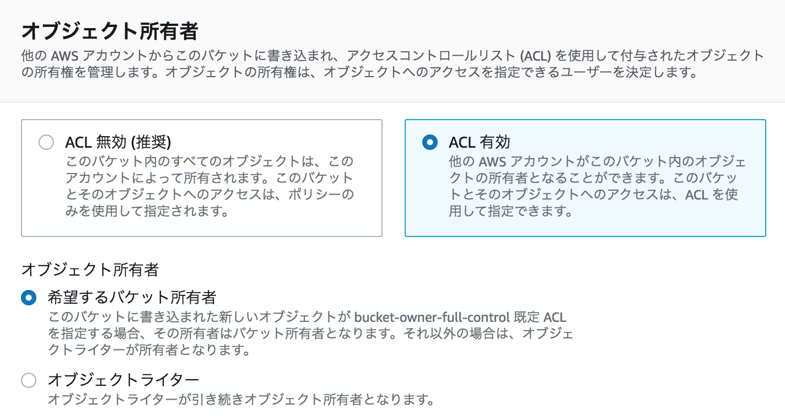

S3
ACL
- バケットと各オブジェクトにつけられる。
- 読み取り・書き込み・フルコントロールのアクセス許可。細かい設定ができない。
-
デフォルトでは「所有者」アカウントのみ作成した S3 リソースにアクセス可能となる。
- AWS ユーザでなくアカウントであることに注意
- バケット所有者でなくオブジェクトを追加したアカウントが GET 可能となる
-
- ログ配信グループは S3 サーバアクセスログを配信できる IAM グループ。これのアクセス制御については ACL がよく使われる。
オブジェクト所有者 (Object Ownership)
- デフォルトはオブジェクトの所有者はオブジェクトを追加したアカウントとなり、バケット所有者アカウントでも GET できなかったり、逆に ACL でパブリックにされたりが出来てしまう。
- 別アカウントに追加されたオブジェクトはポリシー的にアクセスできそうに見えても ACL のせいでアクセスできない！
-
バケット設定の「オブジェクト所有者」でオブジェクト ACL を無効にしてバケット所有者が自動的に所有できるようにする。
- ACL は特殊な用途でしか使われないので無効にすることが推奨される。
-

- ACLs disabled: Bucket owner enforced (recommended) – ACLs are disabled, and the bucket owner automatically owns and has full control over every object in the bucket. ACLs no longer affect permissions to data in the S3 bucket. The bucket uses policies to define access control.
-
ACLs enabled:
- Bucket owner preferred – The bucket owner owns and has full control over new objects that other accounts write to the bucket with the bucket-owner-full-control canned ACL.
- Object writer (default) – The AWS account that uploads an object owns the object, has full control over it, and can grant other users access to it through ACLs.
-
https://docs.aws.amazon.com/AmazonS3/latest/userguide/about-object-ownership.html
- bucket-owner-full-control の使用例
- オブジェクトライターがデフォルトで所有者となるが、バケット所有者を所有者としたい場合に、オブジェクトライターが bucket-owner-full-control ACL を追加してオブジェクトを PUT できる。
- https://docs.aws.amazon.com/AmazonS3/latest/userguide/example-walkthroughs-managing-access-example3.html
S3 独特の所有者という概念自体が ACL の機能らしい
$ aws s3api get-object-acl --bucket test-bucket --key test/hello.txt
{
"Owner": {
"DisplayName": "mshattori",
"ID": "4774e98dae13fa3ebefacaeed0089ab527960b64aabb60aad46b183db28eea41"
},
"Grants": [
{
"Grantee": {
"DisplayName": "mshattori",
"ID": "4774e98dae13fa3ebefacaeed0089ab527960b64aabb60aad46b183db28eea41",
"Type": "CanonicalUser"
},
"Permission": "FULL_CONTROL"
}
]
}
バケットポリシー
- S3 のリソースベースのポリシー。
- オブジェクトを対象にするには Resource の ARN の末尾に /* を追加する必要がある。
- パブリックアクセス
- バケットポリシーでバケット内の全オブジェクトへのパブリックアクセスを設定できる。
ブロックパブリックアクセス (バケット設定)
- ACL やバケットポリシーでのパブリック設定を無効化するセーフティロック。
S3 Access Analyzer (Access Analyzer for S3)
- パブリックバケット・他の AWS アカウントに公開されたバケットを検出。
- Ref. AWS: Security: Logging, Monitoring, Response
S3 Server Side Encryption
https://docs.aws.amazon.com/AmazonS3/latest/userguide/serv-side-encryption.html
-
SSE-S3
- バケットに作成されるキーで AES-256 で自動暗号化。
- AES-256 暗号化タイプと呼ばれる。
- ヘッダ: x-amz-server-side-encryption: AES256
-
SSE-KMS
- KMS のキーをバケットに指定。
- AWS 管理キーとカスタマー管理キーをサポート。
-
ヘッダ:
- x-amz-server-side-encryption: aws:kms
- x-amz-server-side-encryption-aws-kms-key-id
- x-amz-server-side-encryption-context
-
KMS API アクセスのログが残るので監査要件で鍵使用のログが必要な場合はこれを使う。
- オブジェクトを取得するプリンシパルは Key ID に対して Decrypt が許可される必要がある。
- オブジェクトごとに別々のデータキーを使用する。
-
SSE-C
-
SSE with Customer-Provided Encryption Keys … 顧客提供キー
- コンプライアンスで鍵の自前管理が必要な場合などに使用
-
PUT/GET 時に HTTP ヘッダで AES-256 キーを渡す。
- PUT 時にサーバ側で暗号化、GET 時に復号。
-
HTTPS 必須。
- 指定するヘッダ:
- x-amz-server-side-encryption-customer-algorithm
- x-amz-server-side-encryption-customer-key
- x-amz-server-side-encryption-customer-key-MD5
-
-
NOTE
- メタデータは暗号化されない。機密データを書き込まない。
- Glacier と Storage Gateway はデフォルトで暗号化されている。
- 転送中の暗号化には HTTPS の S3 エンドポイントを使用する。
- SSE 必須にするには x-amz-server-side-encryption ヘッダがないと s3:PutObject を拒否するバケットポリシーを設定する。
"Effect": "Deny",
"Principal": "*",
"Action": "s3:PutObject",
"Resource": "arn:aws:s3:::awsexamplebucket1/*",
"Condition": {
"StringNotEquals": {
"s3:x-amz-server-side-encryption": "AES256"
}
}
バケットのデフォルト暗号化 - バケットのオプション。バケット作成後も随時設定・解除できる。 - 2023 年以降、すべての新規オブジェクトが自動的に SSE-S3で暗号化 - 暗号化を OFF にすることはできず、最低でも SSE-S3 が必ず適用さる - 指定できるのは SSE-S3, SSE-KMS だけ。SSE-C はデフォルト暗号化ではない。 - オブジェクトのアップロード時にデフォルト暗号化を上書きできるので、バケットと同じ暗号化方式を強制したい場合はバケットポリシーで強制する。
S3 暗号化のデータ保護範囲 - 物理的に S3 のストレージ盗難によりデータが流出することに対する保護。 - API で GET した時点で復号されるので、アプリ脆弱性や IAM のアクセスキーの漏洩からはデータは保護されない。 - SSE-C では IAM アクセスキーが漏洩しても復号できないが、鍵管理をしっかりする必要がある。 - SSE-KMS では復号に CMK へのアクセス権も必要となるため、ストレージ盗難やバケットが誤ってパブリックになった場合も保護できる。
S3 バケットキー
- SSE-KMS の新機能 (2020)
- バケットレベルで KMS データキーをキャッシュして各オブジェクトのデータキーを暗号化。
- KMS の暗号化/復号化 API コールで発生するコストが 99% 削減されると言われている。
- デフォルトで ON になる。
- https://docs.aws.amazon.com/ja_jp/AmazonS3/latest/userguide/bucket-key.html
バージョニング
- バージョニングはデフォルト OFF でバージョン ID は NULL になる。
-
削除マーカー (論理削除)
- キーのみを指定して DeleteObject すると削除マーカーが追加され、削除マーカーが最新バージョンとなる
- 削除マーカーを削除することでロールバックが可能。
- 物理削除するにはキーとバージョンID を指定して個別にバージョンを削除する。
-
過去バージョンのオブジェクトのサイズの分もコストもかかる (差分バックアップではない)
MFA Delete
- 意図しない削除からオブジェクトを保護。
- オブジェクトバージョンの削除とバージョニング無効化に MFA を要求。
- バージョニングされたバケットでのみ機能する。
オブジェクトロック
- 決められた期間、変更・削除できない WORM (Write Once Read Many) モデルの実現。
- 監査などで誰も改ざんしてないことを証明できる。
- バージョニングされたバケットでのみ機能する。
- バケット作成時に有効にする (自動的にバージョニングも有効になる)
-
ガバナンスモード: 権限のあるユーザは変更できる。
- s3:BypassGovernanceRetention
-
コンプライアンスモード: どのユーザも期間中は変更できない。
ライフサイクルルール
- バケットのオプション。一定期間が過ぎたオブジェクトのライフサイクルを指定。
- 移行 (Transition): 別のストレージクラスに移行。Glacier へのアーカイブも可能。
- 失効 (Expiration): 削除
-
フィルター要素
- キープレフィックスおよびタグで対象を選択できる
-
バージョニングの最新とそれ以前で個別に設定できる。
- https://docs.aws.amazon.com/AmazonS3/latest/userguide/intro-lifecycle-rules.html
- 問題例: LegalHold タグ true のドキュメント以外は 90 日で削除したい
- S3 イベントでオブジェクト作成時に Lambda 関数を開始する。LegalHold タグが存在しない場合は false の値を追加する。
- LegalHold タグが false のフィルタールールを指定した S3 ライフサイクルポリシーを作成し、90 日より古いオブジェクトを削除するよう設定する。
クロスリージョンレプリケーション
- 別バケットへの非同期レプリケーション。ディザスタリカバリ。
- S3 Glacier をターゲットにすることもできる。
- レプリケーションの通信はデフォルトで SSL が使用される。
- クロスアカウントも可能。
- レプリケーション有効化以前に追加されたオブジェクトはレプリケートされない。
- SSE-C で暗号化されたオブジェクトはレプリケートされない。
レプリケーションと暗号化
- 暗号化されていないオブジェクトはレプリケーション先のデフォルト暗号化で暗号化される。
- 暗号化されたオブジェクト (SSE-S3/SSE-KMS) は送信元バケットと同じ方式で暗号化される。レプリケーション先バケットのデフォルト暗号化設定は使用されない。
- クロスリージョンで、SSE-KMS カスタマー管理キーで 暗号化されたオブジェクトはリモートリージョンの SSE-KMS AWS 管理キーで暗号化された。(同じタイプの暗号化方式が使われる)
サーバアクセスログ
- バケットレベルで有効化。トラブルシューティングや監査。
- リクエスタ、バケット名、リクエスト時刻、リクエストアクション、レスポンスのステータス、エラーコードなど。
- ターゲットバケットにログファイルが保存される (ソースバケットをターゲットにすることも可)。
S3 アクセスポイント
- アクセスポイントポリシーをアタッチできるパブリックエンドポイントを作成できる。
- S3 アクセスポイント・エンドポイントともいう。
- バケットポリシーを変更せずにアプリケーション毎にポリシーを分けたい場合などに使う。
- VPC からのリクエス トのみを受け入れるよう設定できる。
- アクセスポイント名と "accesspoint" を含む URL, ARN となる。
署名付きURL
- 特定 IAM プリンシパルのクリデンシャルによる署名が付属した有効期間付きオブジェクト URL。
-
セキュリティ認証情報
- ロールの一時クリデンシャルは有効時間が短いので IAM ユーザのクリデンシャルで作る。
-
HTTP メソッド
- 許可対象とする HTTP メソッド (GET/PUT) の指定。
-
URL に v4 署名同様の情報が含まれる
- AWSAccessKeyId と Signature がクエリパラメタとして付属する。
静的 Web ホスティング (Static Web Hosting)
- バケットのオブション。
- バケットにパブリック読み取りアクセスが必要。
- HTTPS 利用できない。
- 独自ドメイン名を使う場合バケット名を FQDN と同じにする必要がある
Cross-Origin Resource Sharing (CORS) 設定
- バケットのオプション。クロスオリジンでのリソースの取得をブラウザに許可させる。
- 静的 Web ホスティングや JavaScript、Web フォント等を S3 にホストする場合に必要。
- XML で設定。
AWS Transfer Family
- FTP/SFTP/FTPS クライアントから S3, EFS と直接ファ イル転送できる
- https://aws.amazon.com/jp/aws-transfer-family/faqs/
Write-S3Object
- Powershell で S3 にオブジェクトをアップロードできる。
- https://docs.aws.amazon.com/powershell/latest/reference/items/Write-S3Object.html
SG Gracier によるアーカイブ
概要
- 通常はアクセス不要なアーカイブデータ。5分の1くらいのコスト。
-
取り出しオプション: 数分から数時間の 3 つのオプション。
- 迅速(Expedited)取り出し: 通常 1～5 分
- 標準(Standard)取り出し: 通常 3～5 時間
- 大容量(Bulk)取り出し: 大量データを 5～12 時間。最低価格。
-
S3 Glacier Deep Archive
- 取り出し: 12 時間 or 48 時間の 2 つのオプション
-
最低保持期間 90日。
ボールト (Glacier Vault)
- Glacier でアーカイブを格納するコンテナ。
- Vault アクセスポリシーもある。
- Glacier Select
- ボールト内のオブジェクトを取り出さずに S3 Select できる。
ボールトロックポリシー
-
有効期限等を指定して WORM (Write once read many) をサポート。
- 有効期限を過ぎないと誰も変更できないように設定できる。
- S3 Glacier 固有の条件キー ArchiveAgeInDays を使用。
-
MFA Delete も指定可能 (aws:MultiFactorAuthPresent)。
RDS の保護
マルチ AZ 構成
- マルチ AZ でプロビジョニングすると、プライマリ DB インスタンスと別 AZ にスタンバイ DB インスタンスが自動的に作成される。
- スタンバイにデータがレプリケーションされる (同期モードのデータベースミラーリング)
-
自動フェイルオーバー
- プライマリに障害が発生するとスタンバイに自動フェイルオーバー。
- DNS でエンドポイント CNAME がスタンバイの A レコードに切り替わる。
-
クライアントからスタンバイ DB にはアクセスしない (コールドスタンバイ)。
-
メンテナンス時
- スタンバイ→プライマリの順にアップグレード。スタンバイがプライマリに昇格。
-
スナップショット取得時、マルチ AZ ではスタンバイ側から取得するため中断なし。
- シングル AZ ではストレージ I/O の中断 (通常 2～3 秒未満) あり。
リードレプリカ
- 読み込みトラフィックのスループットと可用性の向上。
- プライマリ DB の障害時はリードレプリカがプライマリに昇格。
- マルチ AZ にもできる。
バックアップ
- ストレージボリュームのスナップショットを作成。
-
自動バックアップ
- 特定時刻 (過去 5分以内) の状態にリカバリするための機能。デフォルトで有効。
- 毎日スナップショットを自動的に作成し、トランザクションログを取得。
- バックアップウィンドウと保持期間 (デフォルト7日、最大35日) を指定。
- DB インスタンスを削除されると同時に削除される。
- https://aws.amazon.com/jp/rds/faqs/#Automatic_Backups_and_Database_Snapshots
-
バックアップからのリストア
- 新しいプライマリ DB インスタンスが作成され、自動スナップショットからリストアされる。
- 新しいエンドポイントを使用して作成される。エンドポイントが変わる！
- アプリケーションが新しいエンドポイントに接続するよう変更してリストアが完了。
-
DB スナップショット (手動)
- スナップショットは DB インスタンスを削除しても削除されない。
-
https://docs.aws.amazon.com/ja_jp/AmazonRDS/latest/UserGuide/USER_WorkingWithAutomatedBackups.html
クロスリージョンのディザスタリカバリ
- クロスリージョンのリードレプリカへのレプリケーションも可能。
- クロスリージョンのスナップショットコピー。
メンテナンス (パッチ適用)
- OS や DB エンジンのバージョン更新。
- わずかながらパフォーマンスに影響が出る場合や DB インスタンスが少しの間オフラインになる場合も。
- セキュリティやインスタンスの信頼性に関連するパッチは 「必須」として自動的にスケジューリング（通常は数ヵ月ごとに一度くらい）
-
更新が利用可能かどうかは管理コンソール, CLI, API で確認。
- 必須 – メンテナンスアクションがリソースに適用され、延期はできません。
- 利用可能 – メンテナンスアクションは利用可能ですが、自動的にはリソースに適用されません。手動で適用できます。
- 次のウィンドウ – メンテナンスアクションは次回のメンテナンスウィンドウ中にリソースに適用されます。
- 進行中 – メンテナンスアクションはリソースに適用中です。
-
https://docs.aws.amazon.com/ja_jp/AmazonRDS/latest/UserGuide/USER_UpgradeDBInstance.Maintenance.html
メンテナンスウインドウ
- すべての DB インスタンスは週次 30分のメンテナンスウィンドウがある。
- 指定しない場合はランダムに設定される。
- ほとんどの場合は 30分以内に終了するが、大規模なアップデートではその限りでない。
RDS はプライベートサブネットに配置し、セキュリティグループ・ACL を適切に適用する。

アクセスコントロール
- DB ネイティブのユーザ・権限設定と、RDS サービスに対する IAM ポリシーの両方で制御

IAM データベース認証
- Aurora では DB 接続に RDS が生成する認証トークンが使用されパスワードが不要。
- DB 接続は TLS で暗号化される。
DB 接続の暗号化 (TLS)
- AWS からダウンロードできる RDS の公開鍵 (PEM ファイル) をクライアントに設定して行う。
- DB コネクションの話。REST API (HTTPS) がある訳ではない。
- 暗号化接続のみを受け入れるようインスタンスを設定する。
- https://docs.aws.amazon.com/ja_jp/AmazonRDS/latest/UserGuide/UsingWithRDS.SSL.html
データ保管時の暗号化
- EBS と同じ。KMS を使用した AES-256 暗号化。
- スナップショット・リードレプリカも暗号化される。
- RDS 作成時に有効にする。キーを後から変更することはできない。
DynamoDB の保護
概要
- NoSQL のドキュメントデータベース

-
パーティションプライマリキー: パーティションキー(ハッシュ属性)
- テーブル内でユニークでなければならない。
-
複合プライマリキー: パーティションキー & ソートキー(範囲属性)
- 同じパーティションキーに対して一意のソートキー。
- パーティションキーの値が同じ項目は同じパーティションに保存される。
-
項目のデータは JSONドキュメント
- 属性値としてリストやマップもある。
- 項目サイズは最大 400KB (属性名含む)。
-
テーブルに容量 (項目数) の制限はない。
IAM ポリシーによるきめ細かなアクセスコントロール
- IAM ポリシーで項目や属性レベルのきめ細かなアクセスコントロールが可能。
- Resource にテーブルを指定して Condition で属性名と値の条件を指定する。
- リソースベースポリシーはないことに注意！DynamoDB はアイデンティティベースのみ。
例:
- 特定のプライマリキー値の項目のみ取得できるようにする (UserID 属性が一致する項目等)
- 特定の属性を取得できないようにする
{
"Version": "2012-10-17",
"Statement": [
{
"Sid": "ReadOnlyAccessToUserItems",
"Effect": "Allow",
"Action": [
"dynamodb:UpdateItem",
"dynamodb:GetItem",
"dynamodb:BatchGetItem",
"dynamodb:Query"
],
"Resource": [
"arn:aws:dynamodb:us-west-2:123456789012:table/GameScores"
],
"Condition": {
"ForAllValues:StringEquals": {
"dynamodb:LeadingKeys": [
"${graph.facebook.com:id}"
],
"dynamodb:Attributes": [
"UserId",
"TopScore"
]
},
"StringEqualsIfExists": {
"dynamodb:Select": "SPECIFIC_ATTRIBUTES",
"dynamodb:ReturnValues": [
"NONE",
"UPDATED_OLD",
"UPDATED_NEW"
]
}
}
}
]
}
後で詳細を記載。
Ref.
- https://docs.aws.amazon.com/ja_jp/amazondynamodb/latest/developerguide/using-identity-based-policies.html
- https://docs.aws.amazon.com/ja_jp/IAM/latest/UserGuide/reference_policies_examples_dynamodb_specific-table.html
- https://docs.aws.amazon.com/ja_jp/amazondynamodb/latest/developerguide/specifying-conditions.html
データ保管時の暗号化
-
デフォルトで SSE-KMS で暗号化される。
- デフォルトは AWS 所有キー。DynamoDB により所有され追加料金は発生しない。
- AWS 管理キー、カスタマー管理キーも指定できる。
-
テーブルキー
- テーブル毎のデータキーでパーティション毎？のキーを暗号化。
- バケットキーみたいなこと？
- https://docs.aws.amazon.com/ja_jp/kms/latest/developerguide/services-dynamodb.html
DynamoDB 暗号化クライアント
- クライアントサイド暗号化を実装するライブラリ (Java, Python)。項目の署名も実施。
- 鍵はクライアント管理か AWS KMS, CloudHSM などを使用。
- https://docs.aws.amazon.com/ja_jp/dynamodb-encryption-client/latest/devguide/client-server-side.html
- https://docs.aws.amazon.com/ja_jp/dynamodb-encryption-client/latest/devguide/what-is-ddb-encrypt.html
バックアップ
-
オンデマンドバックアップ
- テーブル全体のスナップショットを作成してアーカイブ。
-
ポイントインタイムリカバリー
- 直前 35日間の任意の時点にダウンタイムなしに復元可能。増分バックアップ。
- ポイントインタイムリカバリーの「有効化」で有効にする。(デフォルト無効)
グローバルテーブルによるディザスタリカバリ
- DynamoDB ストリームを利用したマルチリージョン・マルチマスターのレプリケーション。
- リージョンごとに１つまでレプリカテーブルを作成できる。同一アカウントのみ。
- 近いリージョンのレプリカにアクセスすることでのレイテンシー削減。
- データも暗号化されたまま (リージョン間で CMK どうしてる？)。
- 最新書き込み優先: 同じ項目が複数リージョンで同時に変更された場合、可能な限り最新の変更が優先される。